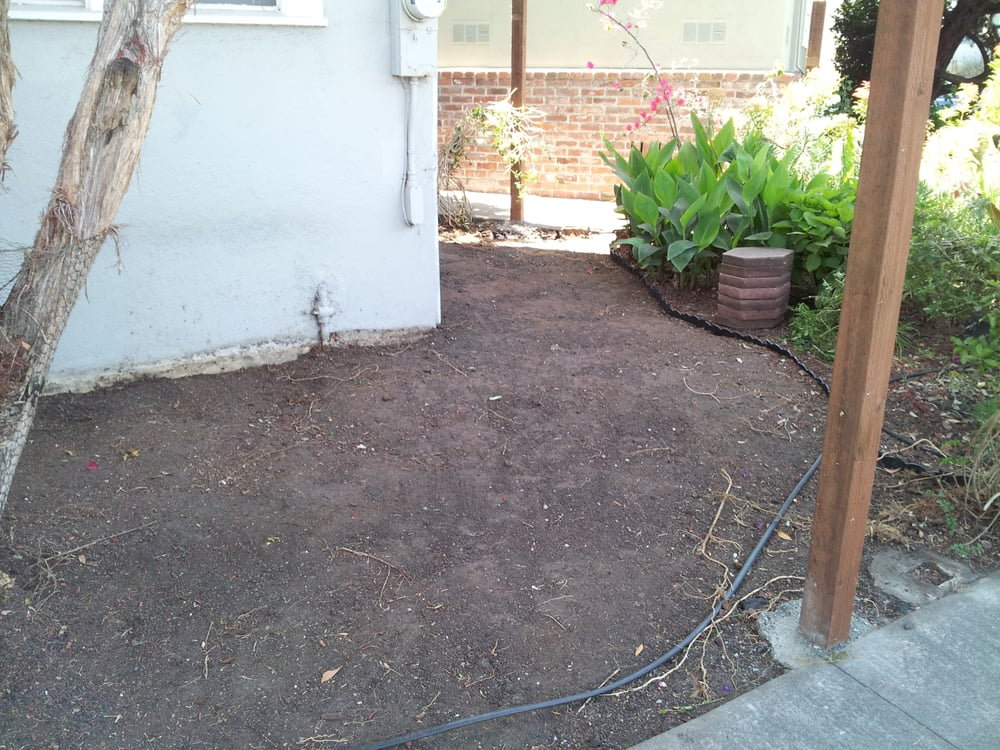

"Thought I would empty our small front yard of many years of wood chips, bird seed and weeds prior to installing a fence. The DIY motivation disappeared after a few hours and most of the yard still covered. Called Raven in desperation, he came out the next day and spent most of that day, totally cleaned it all up and hauled it away.Left the yard and area spotless and we were astonished at how good it looked. The fence was installed the next day . . Raven was easy to work with, very conscientious, very reasonable. We plan to have him back to help us figure out what to do with our new space."
"Raven, the owner is very pleasant to work with. He smiles a lot and very polite. Pedro, his assistant is extremely polite and hardworking. I hired them yesterday to maintain my garden and haul some construction debris. I am so pleased of the fruit of their labor. They charge very reasonably as well. I hate spending money and paying a lot for a mediocre service so I do a bit of research first. I highly recommend these two."
"Called to inquire on lawn conversion with pricing being one of my concerns. Raven was polite, patience and answered all my questions. Appointment was made for Raven to see the lawn area. Raven provided several drought resistance ideas including the type of plants/shrubs and rocks as well as mulch. The estimates received for the three landscape ideas provided was very reasonable. We were surprised with the outcome as it was a lot nicer than we imagined it to be. What an "awesome" job !!! Raven was very pleasant to work with and his personal service is excellent. We highly recommend Sizemore Services."
"Was super happy with the work. The back of our yard was a patch of weeds with a lot of junk and a few tree branches that needed to be cut back. Raven and his team did an amazing job. He was easy to communicate with, and they asked when they had questions about anything that wasn't clear. I would definitely work with Raven again."